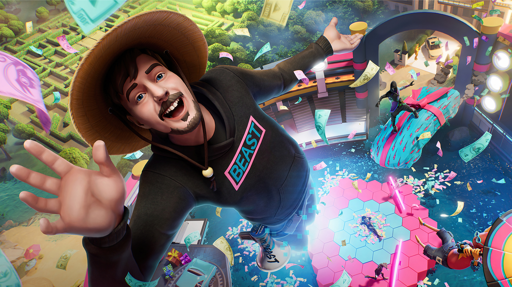
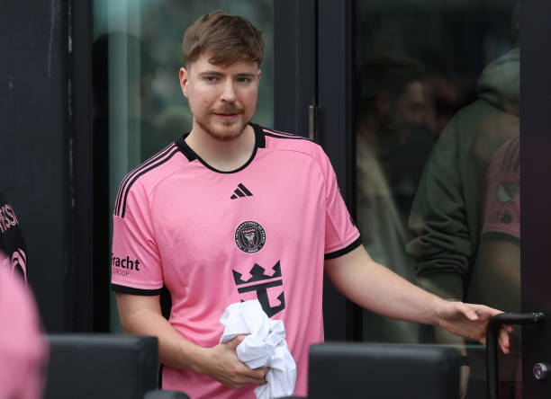

Conoce a:
MrBeast, el mayor youtuber del mundo.
Mr. Beast, cuyo nombre real es Jimmy Donaldson, es un popular youtuber estadounidense conocido por sus desafíos extremos y obsequios masivos.
A los 26 años, ha construido un imperio de contenido que incluye desafíos elaborados, donaciones de gran escala, y asociaciones comerciales que generan millones de vistas en sus videos.
Se ha posicionado como una de las mayores estrellas de Youtube a nivel mundial. Gracias a las curiosas dinámicas que exhibe en aquella plataforma, el creador de contenido ha acumulado 211 millones de suscriptores en unos pocos años.
Se hizo conocido por su filantropía, como regalar dinero a personas aleatorias y recaudar fondos para diversas causas benéficas.
A pesar de ser mundialmente famoso y millonario, no todo es color de rosa
No todos saben que el empresario y filántropo fue diagnosticado hace varios años con una rara condición de salud que no tiene cura: la enfermedad de Crohn.
En qué consiste la enfermedad que tiene MrBeast
Crohn es una “enfermedad intestinal inflamatoria” de carácter crónico. En términos sencillos, los tejidos del tracto digestivo se inflaman y esto termina provocando dolores abdominales, disminución del apetito, fatiga, pérdida de peso y diarreas.
Actualmente no existe una cura para la enfermedad de Crohn y no existe un tratamiento único que funcione para todos.
Su Canal de Youtube
Con más de 211 millones de suscriptores, su canal se ha destacado por su creatividad, filantropía y desafíos extremos.
MrBeast comenzó su aventura en YouTube en 2012, subiendo videos de juegos como Minecraft y Call of Duty. Sin embargo, su popularidad despegó en 2017 cuando comenzó a crear contenido basado en desafíos extremos, sorteos masivos y actos de caridad. Su video "Counting to 100,000" fue uno de los primeros en captar la atención masiva, acumulando millones de vistas y estableciendo su marca de contenido inusual y entretenido.
Contenido del Canal:
Desafíos Extremos: Desde pasar 24 horas en hielo hasta construir la torre LEGO más alta del mundo, sus desafíos son audaces y únicos.
Filantropía: MrBeast es famoso por sus actos de generosidad. Ha regalado millones de dólares a desconocidos, amigos y suscriptores en forma de efectivo, autos y casas. Videos como "I Gave $1,000,000 To Random People" muestran su enfoque en la filantropía.
Impacto y Legado
El impacto de MrBeast va más allá de YouTube. Ha inspirado a otros creadores de contenido a ser más generosos y a pensar en formas innovadoras de captar la atención de su audiencia. Su enfoque en la filantropía ha creado una tendencia en la plataforma, demostrando que es posible combinar entretenimiento con buenas acciones.
Podemos entender
MrBeast ha redefinido lo que significa ser un creador de contenido en YouTube. Su mezcla de entretenimiento extremo, generosidad y compromiso con causas benéficas lo ha hecho destacar en la plataforma. Con un enfoque constante en la innovación y la filantropía, el canal de MrBeast continúa creciendo y dejando una marca significativa en el mundo digital y más allá.